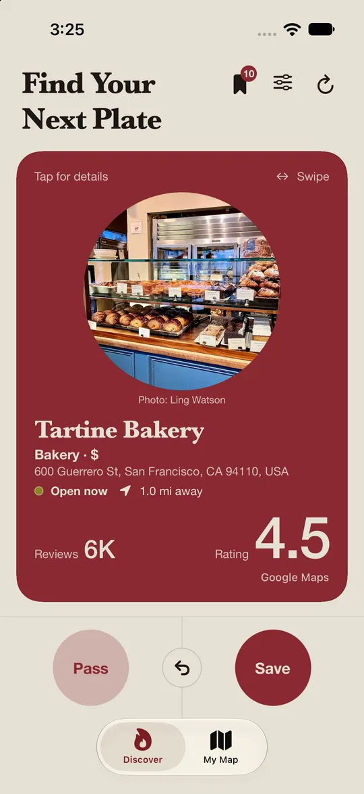
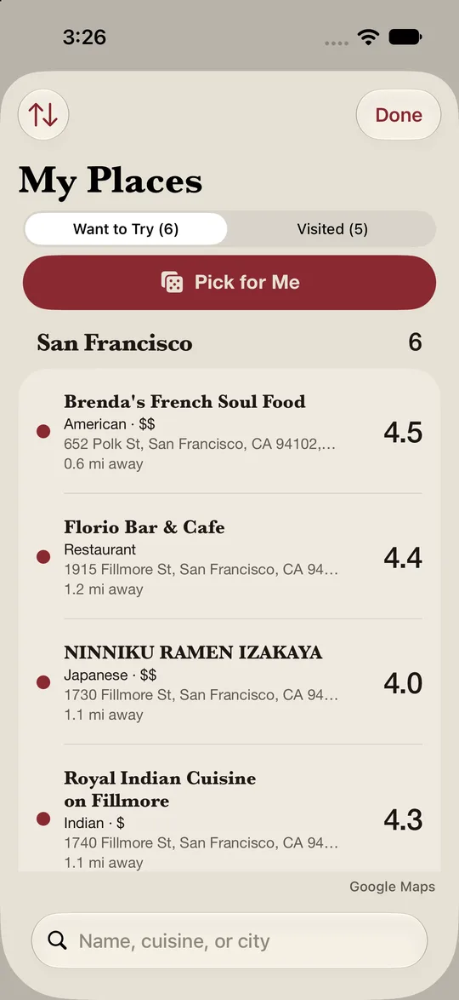
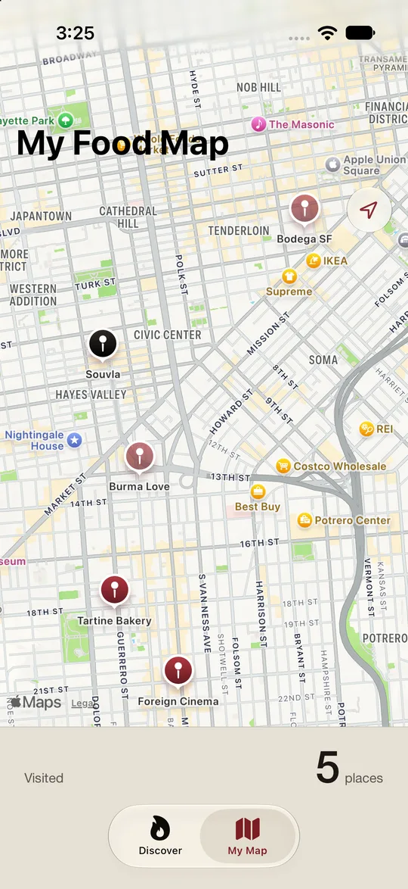
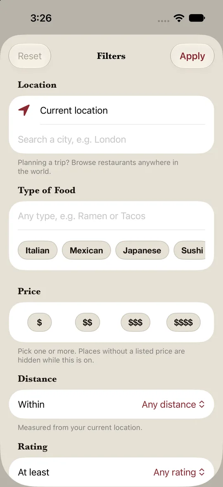

1
Swipe
Local spots, one card at a time. Right to save, left to pass. Tap a card for photos, hours, and reviews.
For iPhone
Swipe through local restaurants. Save the ones you want to try. Keep notes on the ones you've been to.

How it works
Plate turns "where should we eat?" into a quick stack of cards, then keeps track of everywhere you've been.
Local spots, one card at a time. Right to save, left to pass. Tap a card for photos, hours, and reviews.

Everything you save lands in My Places, sorted by city. Can't choose? Tap Pick for Me and Plate chooses for you.

Been there? Rate it and note what you ordered. Every place you've visited goes on your food map.
Built for real decisions
Big chains are filtered out, so the stack is full of neighborhood spots.
Planning a trip? Set any city and swipe through it before you land.
Swiped too fast? One tap brings the last card back.
Tap an address to open it in Apple Maps or Google Maps.
Stars, what you ordered, and whether you'd go back. Saved with the date you went.
No account and no email. Open the app and start swiping.

Narrow the stack by type of food, price, distance, rating, or what's open right now. Change the location to search anywhere in the world.
Saved restaurants, ratings, and notes live on your phone. Plate doesn't upload them, and the developer can't see them. Read the privacy policy.
Support
Answers to common questions. Don't see yours? Get in touch.
Plate shows you local restaurants one card at a time. Swipe right (or tap Save) to keep a place, and swipe left (or tap Pass) to skip it. Tap any card to see photos, hours, reviews, and more.
Tap the ↩ undo button to bring back the last card you swiped.
Everything you save lives in My Places. You can search, sort, and share your saved spots from there.
Can't decide where to eat? Tap Pick for Me in My Places and Plate will choose one of your saved restaurants for you.
In My Places, swipe right on a restaurant in Want to Try and tap "Been here" to rate it and write notes. Places you've been show up on My Map.
Plate uses your location to find restaurants near you. Go to Settings › Plate › Location and choose "While Using the App." Prefer not to share your location? Tap the filter button and choose a city or address instead.
Tap the filter (sliders) button and choose a location. You can browse restaurants anywhere in the world.
Tap the filter (sliders) button to filter by type of food, price, distance, rating, or what's open now.
You've seen every restaurant nearby that matches your filters. Try a wider distance, remove a filter, or choose a different location to see more.
Your filters may be too narrow. Try allowing more price levels, a lower minimum rating, a wider distance, or turning off "Open now."
Yes. Open Filters and tap "Show Passed Restaurants Again."
Plate is built for discovering local spots, so it filters out the big chains. If a chain slips through, or a local restaurant is hidden by mistake, let us know.
Restaurant information comes from Google and can sometimes be out of date. Please check with the restaurant directly. You can also suggest an edit to the restaurant's listing in Google Maps.
Open a restaurant and tap its address. You can copy the address or open it in Apple Maps or Google Maps.
No. Plate doesn't have accounts or sign-in.
Your saved restaurants, reviews, and preferences are stored only on your device. Plate doesn't upload them to any server.
Not right now. Your lists stay on the device you saved them on.
Deleting the app permanently removes your saved restaurants and reviews, unless they're restored from an iCloud or computer backup of your device.
For more details, see the Privacy Policy.
Found a bug, have a suggestion, or need help with something else? Email us. If you're reporting a problem, include your iPhone model and iOS version.
Privacy Policy
Effective date: October 19, 2026
Plate helps you discover restaurants near you, save the ones you want to try, and keep notes on the places you've been. This policy explains what information Plate uses, where it goes, and the choices you have.
If you allow it, Plate uses your device's location while the app is open to find restaurants near you and show how far away they are. Plate never uses your location in the background.
To search, Plate sends your location (or a location you choose in Filters) to the Google Places API, which returns nearby restaurants. Plate doesn't store your location history or send it anywhere else.
You can turn off location access at any time in Settings › Plate › Location. Plate still works if you choose a city or address in Filters.
When you type a city or address in Filters, the text is sent to Apple Maps to suggest matching places.
These are stored only on your device:
Plate doesn't upload this information to any server, and the Plate developer can't see it. If your device is backed up to iCloud or a computer, this information may be included in that backup, under Apple's privacy policy.
Plate relies on these services, which have their own privacy policies:
When you tap a link to open a restaurant in Google Maps, Apple Maps, or the restaurant's website, or to call it, that app or website's own privacy policy applies.
Since your information is stored on your device, you control it:
Plate isn't directed at children under 13, and it doesn't knowingly collect personal information from children.
If this policy changes, the updated version will be posted at this page with a new effective date. Significant changes will also be noted in the app's release notes.
Questions about this policy or your privacy can be sent to jumi2082@colorado.edu.
Legal
Last updated: October 19, 2026
© 2026 Julia Miyamoto. All rights reserved.
The Plate app, including its name, logo, app icon, design, layout, text, and software code, is owned by Julia Miyamoto and is protected by copyright and other intellectual property laws. You may not copy, modify, distribute, sell, or reverse engineer any part of Plate without written permission.
Restaurant listings, details, ratings, reviews, and photos shown in Plate are provided by Google through the Google Places API and are not owned by Plate.
This information is shown "as is." Hours, prices, and other details may change, so please confirm important details directly with the restaurant.
Maps and location search in Plate are provided by Apple Maps. Map data is © Apple and its data providers. Google Maps is a trademark of Google LLC.
Ratings and notes you write in Plate are yours. They stay on your device, and Plate does not claim any ownership of them.
Apple, Apple Maps, iPhone, and App Store are trademarks of Apple Inc. Google, Google Maps, and Google Places are trademarks of Google LLC. Plate is not affiliated with, endorsed by, or sponsored by Apple, Google, or any restaurant shown in the app.
If you believe content shown in Plate infringes your copyright, please contact us with a description of the content and where it appears. Content that comes from Google, such as photos and reviews, can also be reported directly to Google through Google Maps.
Contact: jumi2082@colorado.edu